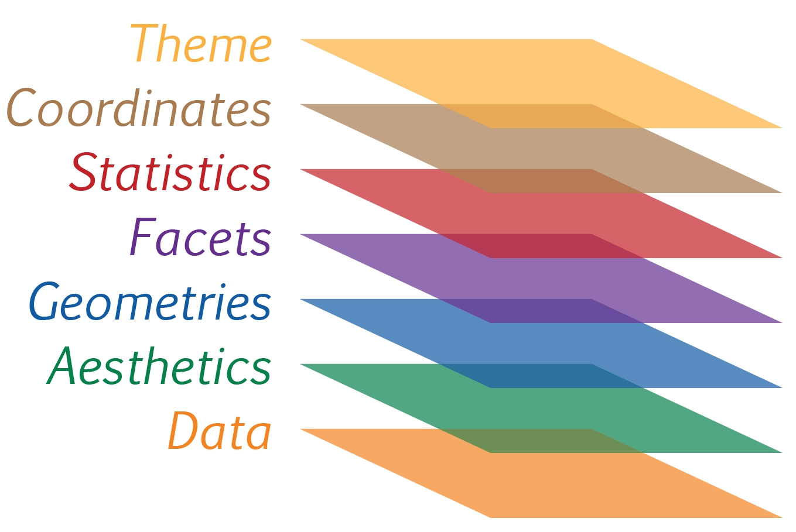
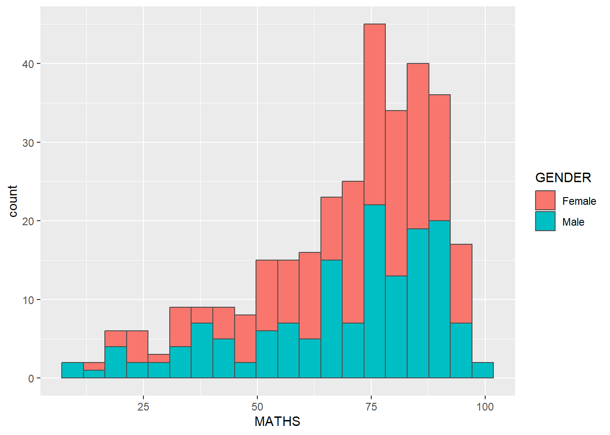
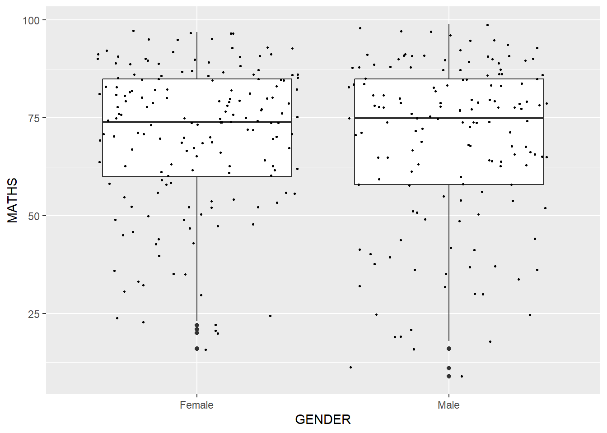
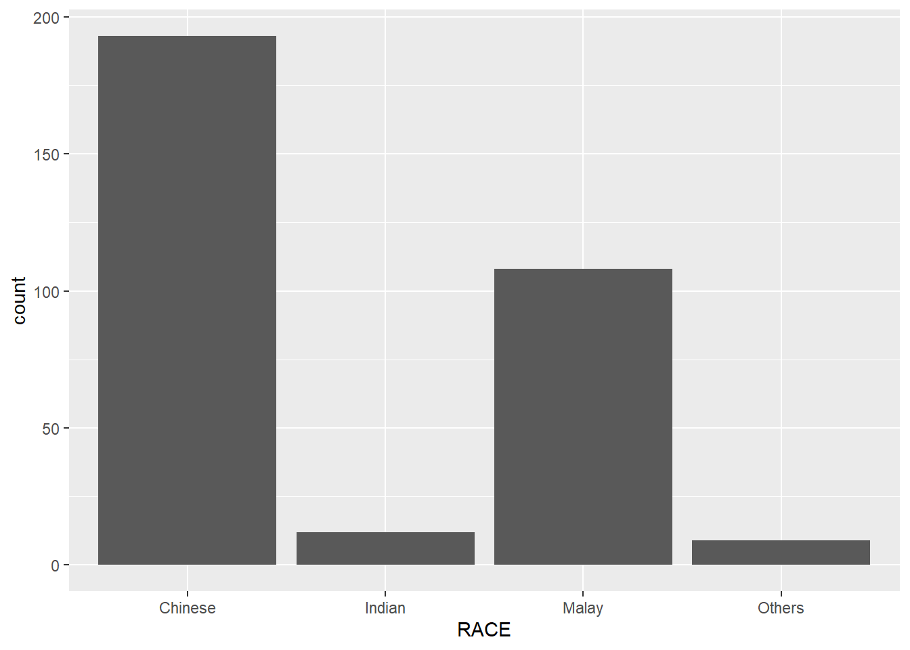

code block
pacman::p_load(tidyverse, kableExtra)Lesson 1: Hands-on Exercise 1: A Layered Grammar of Graphics: ggplot2 methods
| Values | Special Remarks | |
|---|---|---|
| Work done | 1) Set up RStudio, Quarto and Netlify 2) Set up Git, GitHub and RStudio 3) IDEA on exam_data 4) Hands-on Exercise 1 |
Will take some time to think about the design of the website |
| Hours taken | 20 hours | Two sick kids |
| Reflections | 4 | Overall Reflections |
| Questions | 2 |
How do I feel?
|
What do I think? This Hands-on Exercise 1 reminded me of DAL Hands-on Exercises. It allowed me to form a concrete connection between theory (A Layered Grammar of Graphics) and practice (different Geometric Objects, types of Facets etc.). It was interesting to see different examples of the layers but after awhile it got a little tedious. I did have a lot of time to play around with Quarto and RStudio so that I could quickly familiarise myself. I do hope to see more of how we can structure our thinking of data analytics according to a Layered Grammar of Graphics (Am loving this!). I am looking forward to this course! |
The code chunk below uses p_load() of pacman package to check if tidyverse packages are installed in the computer. If they are, then they will be launched into R.
pacman::p_load(tidyverse, kableExtra)I am an absolute newbie in R and Quarto. This page is only possible by standing on the shoulders of giants. Definitely inspired by Hailey! Just doing extra stuff of IDEA before getting to the Hands-on Exercise.
The dataset, Exam_data.csv, contains the Year-end examination grades of a cohort of primary 3 students from a local school, and is uploaded as exam_data.
exam_data <- read_csv("data/Exam_data.csv", show_col_types = FALSE)I was unsure of the R codes needed to do data cleaning and so referred to Hailey’s website, Data Cleaning in R, and Data Cleaning in R Made Simple. I am happy that the dataset was quite clean.
head():head(exam_data,5) %>%
kbl() %>%
kable_material()| ID | CLASS | GENDER | RACE | ENGLISH | MATHS | SCIENCE |
|---|---|---|---|---|---|---|
| Student321 | 3I | Male | Malay | 21 | 9 | 15 |
| Student305 | 3I | Female | Malay | 24 | 22 | 16 |
| Student289 | 3H | Male | Chinese | 26 | 16 | 16 |
| Student227 | 3F | Male | Chinese | 27 | 77 | 31 |
| Student318 | 3I | Male | Malay | 27 | 11 | 25 |
str():str(exam_data)spc_tbl_ [322 × 7] (S3: spec_tbl_df/tbl_df/tbl/data.frame)
$ ID : chr [1:322] "Student321" "Student305" "Student289" "Student227" ...
$ CLASS : chr [1:322] "3I" "3I" "3H" "3F" ...
$ GENDER : chr [1:322] "Male" "Female" "Male" "Male" ...
$ RACE : chr [1:322] "Malay" "Malay" "Chinese" "Chinese" ...
$ ENGLISH: num [1:322] 21 24 26 27 27 31 31 31 33 34 ...
$ MATHS : num [1:322] 9 22 16 77 11 16 21 18 19 49 ...
$ SCIENCE: num [1:322] 15 16 16 31 25 16 25 27 15 37 ...
- attr(*, "spec")=
.. cols(
.. ID = col_character(),
.. CLASS = col_character(),
.. GENDER = col_character(),
.. RACE = col_character(),
.. ENGLISH = col_double(),
.. MATHS = col_double(),
.. SCIENCE = col_double()
.. )
- attr(*, "problems")=<externalptr> There are 322 rows and 7 variables. The output reveals that the variables have been assigned their correct data types.
exam_data[duplicated(exam_data),]# A tibble: 0 × 7
# ℹ 7 variables: ID <chr>, CLASS <chr>, GENDER <chr>, RACE <chr>,
# ENGLISH <dbl>, MATHS <dbl>, SCIENCE <dbl>There were no duplicated rows found in exam_data.
sum(is.na(exam_data))[1] 0There were no missing values found in exam_data.
3.1 In CLASS
unique(exam_data$CLASS)[1] "3I" "3H" "3F" "3G" "3E" "3C" "3D" "3A" "3B"3.2 In GENDER
unique(exam_data$GENDER)[1] "Male" "Female"3.3 In RACE
unique(exam_data$RACE)[1] "Malay" "Chinese" "Indian" "Others" There were no string inconsistencies found in exam_data.
4.1 In ENGLISH
summary(exam_data$ENGLISH) Min. 1st Qu. Median Mean 3rd Qu. Max.
21.00 59.00 70.00 67.18 78.00 96.00 4.2 In MATHS
summary(exam_data$MATHS) Min. 1st Qu. Median Mean 3rd Qu. Max.
9.00 58.00 74.00 69.33 85.00 99.00 4.3 In SCIENCE
summary(exam_data$SCIENCE) Min. 1st Qu. Median Mean 3rd Qu. Max.
15.00 49.25 65.00 61.16 74.75 96.00 There were no data irregularities found in exam_data.
hist(exam_data$MATHS)
ggplot(data=exam_data, aes(x = MATHS)) +
geom_histogram(bins=10,
boundary = 100,
color="black",
fill="grey") +
ggtitle("Distribution of Maths scores") +
theme(plot.title = element_text(hjust = 0.5))I’d like to conclude the preference for ggplot2 based on the differences below is based entirely on the subjective notion of “what is pleasing to the eye”.
The title and axis titles of ggplot2 make more sense than R Graphics . Their positions are also clear but I would prefer the ggtitle to be centered, rather than at the side so I added one extra line of code).
While binning on 10 with ggplot2 is the same number of bins as R Graphics, ggplot2 gives us quartiles - Quartiles are useful for the measure of central tendency and spread for highly skewed data, which is the case for MATHS.
The background of ggplot2 have grid lines which makes it easier for the eye to follow the values.
Apparently, this is due to the notion of visual variables (that was introduced by Jacques Bertin in 1967) and the associated levels of perception affect the effectiveness of data visualisation.
The transferable skills from ggplot2 are not the idiosyncrasies of plotting syntax, but a powerful way of thinking about visualisation, as a way of mapping between variables and the visual properties of geometric objects that you can perceive. ~Hadley Wickham
Interestingly, how we visualise this data should reflect how we make sense of the world. The following quote also stood out for me as it reinforces the notion that data visualisation is not isolated from data analysis - “Data analysis without data visualisation is no data analysis” (Cleveland, 1994 in Kam, 2023).
ggplot2 is designed to work iteratively. You start with a layer that shows the raw data. Then you add layers of annotations and statistical summaries. This allows you to produce graphics using the same structured thinking that you would use to design an analysis. This reduces the distance between the plot in your head and the one on the page. This is especially helpful for students who have not yet developed the structured approach to analysis used by experts. ~Hadley Wickham (bold my own)

Data: The dataset being plotted.
Aesthetics take attributes of the data and use them to influence visual characteristics, such as position, colours, size, shape, or transparency.
Geometrics: The visual elements used for our data, such as point, bar or line.
Facets split the data into subsets to create multiple variations of the same graph (paneling, multiple plots).
Statistics, statiscal transformations that summarise data (e.g. mean, confidence intervals).
Coordinate systems define the plane on which data are mapped on the graphic.
Themes modify all non-data components of a plot, such as main title, sub-title, y-aixs title, or legend background.
ggplot(data=exam_data)
A blank canvas appears.
ggplot() initializes a ggplot object.
The data argument defines the dataset to be used for plotting.
If the dataset is not already a data.frame, it will be converted to one by fortify().
Aesthetic mappings take attributes of the data and use them to influence visual characteristics such as position, colour, size, shape, or transparency (also part of Bertin’s and other researchers’ set of “retinal” variables). Each visual characteristic can thus encode an aspect of the data and be used to convey information.
All aesthetics of a plot are specified in the aes() function call (each geom layer can have its own aes specification).
ggplot(data=exam_data,
aes(x= MATHS))
ggplot includes the x-axis and the axis’s label.
Geometric objects are the actual marks we put on a plot. Examples include:
geom_point for drawing individual points (e.g., a scatter plot)
geom_line for drawing lines (e.g., for a line charts)
geom_smooth for drawing smoothed lines (e.g., for simple trends or approximations)
geom_bar for drawing bars (e.g., for bar charts)
geom_histogram for drawing binned values (e.g. a histogram)
geom_polygon for drawing arbitrary shapes
geom_map for drawing polygons in the shape of a map! (You can access the data to use for these maps by using the map_data() function).
A plot must have at least one geom; there is no upper limit. You can add a geom to a plot using the + operator.
For complete list, please refer to here.
ggplot(data=exam_data,
aes(x=RACE)) +
geom_bar()
In a dot plot, the width of a dot corresponds to the bin width (or maximum width, depending on the binning algorithm), and dots are stacked, with each dot representing one observation.
ggplot(data=exam_data,
aes(x = MATHS)) +
geom_dotplot(dotsize = 0.5)Bin width defaults to 1/30 of the range of the data. Pick better value with
`binwidth`.
The y scale is not very useful, in fact it is very misleading.
I wonder why the y scale is suddenly in decimal place (0.00, 0.25 etc) when it was previously in count.
The code chunk below performs the following two steps:
scale_y_continuous() is used to turn off the y-axis, and
binwidth argument is used to change the binwidth to 2.5.
ggplot(data=exam_data,
aes(x = MATHS)) +
geom_dotplot(binwidth=2.5,
dotsize = 0.5) +
scale_y_continuous(NULL,
breaks = NULL) 
I wonder why the binwidth is changed to 2.5. It looks the same as the previous binning.
With binwidth = 2
ggplot(data=exam_data,
aes(x = MATHS)) +
geom_dotplot(binwidth=2,
dotsize = 0.5) +
scale_y_continuous(NULL,
breaks = NULL) With binwidth = 3.5
ggplot(data=exam_data,
aes(x = MATHS)) +
geom_dotplot(binwidth=3.5,
dotsize = 0.5) +
scale_y_continuous(NULL,
breaks = NULL) binwidth “controls the width of each bin along the X-axis” (R Coder, 2024). While it might be similar between binwidth = 2.5 and 3, it is more proportionate than when binwidth =2 and 3.5 and therefore pleasing to the eye. Thus, changing to 2.5 is just to address the error code.
geom_histogram()ggplot(data=exam_data,
aes(x = MATHS)) +
geom_histogram() `stat_bin()` using `bins = 30`. Pick better value with `binwidth`.
Note that the default bin is 30.
geom()In the code chunk below,
bins argument is used to change the number of bins to 20,
fill argument is used to shade the histogram with light blue color, and
color argument is used to change the outline colour of the bars in black
ggplot(data=exam_data,
aes(x= MATHS)) +
geom_histogram(bins=20,
color="black",
fill="light blue") 
The code chunk below changes the interior colour of the histogram (i.e. fill) by using sub-group of aesthetic().
ggplot(data=exam_data,
aes(x= MATHS,
fill = GENDER)) +
geom_histogram(bins=20,
color="grey30")
This approach can be used to colour, fill and alpha of the geometric.
geom-density() computes and plots kernel density estimate, which is a smoothed version of the histogram.
It is a useful alternative to the histogram for continuous data that comes from an underlying smooth distribution.
ggplot(data=exam_data,
aes(x = MATHS)) +
geom_density()
The code chunk below plots two kernel density lines by using colour or fill arguments of aes()
ggplot(data=exam_data,
aes(x = MATHS,
colour = GENDER)) +
geom_density()
geom_boxplot() displays continuous value list. It visualises five summary statistics (the median, two hinges and two whiskers), and all “outlying” points individually.
ggplot(data=exam_data,
aes(y = MATHS,
x= GENDER)) +
geom_boxplot() 
Notches are used in box plots to help visually assess whether the medians of distributions differ. If the notches do not overlap, this is evidence that the medians are different.
The code chunk below plots the distribution of Maths scores by gender in notched plot instead of boxplot.
ggplot(data=exam_data,
aes(y = MATHS,
x= GENDER)) +
geom_boxplot(notch=TRUE)
geom_violin is designed for creating violin plot. Violin plots are a way of comparing multiple data distributions. With ordinary density curves, it is difficult to compare more than just a few distributions because the lines visually interfere with each other. With a violin plot, it’s easier to compare several distributions since they’re placed side by side.
ggplot(data=exam_data,
aes(y = MATHS,
x= GENDER)) +
geom_violin() 
geom_point() is especially useful for creating scatterplot.
The code chunk below plots a scatterplot showing the Maths and English grades of pupils by using geom_point().
ggplot(data=exam_data,
aes(x= MATHS,
y=ENGLISH)) +
geom_point() 
The code chunk below plots the data points on the boxplots by using both geom_boxplot() and geom_point().
ggplot(data=exam_data,
aes(y = MATHS,
x= GENDER)) +
geom_boxplot() +
geom_point(position="jitter",
size = 0.5) 
The Statistics functions statistically transform data, usually as some form of summary. For example:
frequency of values of a variable (bar graph)
a mean
a confidence limit
There are two ways to use these functions:
add a stat_() function and override the default geom, or
add a geom_() function and override the default stat.
stat()The boxplots below are incomplete because the positions of the means were not shown.
ggplot(data=exam_data,
aes(y = MATHS, x= GENDER)) +
geom_boxplot()
The code chunk below adds mean values by using stat_summary() function and overriding the default geom.
ggplot(data=exam_data,
aes(y = MATHS, x= GENDER)) +
geom_boxplot() +
stat_summary(geom = "point",
fun.y="mean",
colour ="red",
size=4) Warning: The `fun.y` argument of `stat_summary()` is deprecated as of ggplot2 3.3.0.
ℹ Please use the `fun` argument instead.
geom() methodThe code chunk below adding mean values by using geom_() function and overriding the default stat.
ggplot(data=exam_data,
aes(y = MATHS, x= GENDER)) +
geom_boxplot() +
geom_point(stat="summary",
fun.y="mean",
colour ="red",
size=4) Warning in geom_point(stat = "summary", fun.y = "mean", colour = "red", :
Ignoring unknown parameters: `fun.y`No summary function supplied, defaulting to `mean_se()`
The scatterplot below shows the relationship of Maths and English grades of pupils. The interpretability of this graph can be improved by adding a best fit curve.
ggplot(data=exam_data,
aes(x= MATHS, y=ENGLISH)) +
geom_point() 
In the code chunk below, geom_smooth() is used to plot a best fit curve on the scatterplot.
ggplot(data=exam_data,
aes(x= MATHS, y=ENGLISH)) +
geom_point() +
geom_smooth(size=0.5)Warning: Using `size` aesthetic for lines was deprecated in ggplot2 3.4.0.
ℹ Please use `linewidth` instead.`geom_smooth()` using method = 'loess' and formula = 'y ~ x'
The default smoothing method can be overridden as shown below.
ggplot(data=exam_data,
aes(x= MATHS,
y=ENGLISH)) +
geom_point() +
geom_smooth(method=lm,
size=0.5)`geom_smooth()` using formula = 'y ~ x'
Facetting generates small multiples (sometimes also called trellis plot), each displaying a different subset of the data. They are an alternative to aesthetics for displaying additional discrete variables. ggplot2 supports two types of factes, namely: facet_grid() and facet_wrap.
facet_wrap()facet_wrap wraps a 1d sequence of panels into 2d. This is generally a better use of screen space than facet_grid because most displays are roughly rectangular.
The code chunk below plots a trellis plot using facet-wrap().
ggplot(data=exam_data,
aes(x= MATHS)) +
geom_histogram(bins=20) +
facet_wrap(~ CLASS)
facet_grid()functionfacet_grid() forms a matrix of panels defined by row and column facetting variables. It is most useful when you have two discrete variables, and all combinations of the variables exist in the data.
The code chunk below plots a trellis plot using facet_grid().
ggplot(data=exam_data,
aes(x= MATHS)) +
geom_histogram(bins=20) +
facet_wrap(~ CLASS)
The Coordinates functions map the position of objects onto the plane of the plot. There are a number of different possible coordinate systems to use, they are:
- [`coord_cartesian()`](https://ggplot2.tidyverse.org/reference/coord_cartesian.html): the default cartesian coordinate systems, where you specify x and y values (e.g. allows you to zoom in or out).
- [`coord_flip()`](https://ggplot2.tidyverse.org/reference/coord_flip.html): a cartesian system with the x and y flipped.
- [`coord_fixed()`](https://ggplot2.tidyverse.org/reference/coord_fixed.html): a cartesian system with a "fixed" aspect ratio (e.g. 1.78 for a "widescreen" plot).
- [`coord_quickmap()`](https://ggplot2.tidyverse.org/reference/coord_map.html): a coordinate system that approximates a good aspect ratio for maps.By the default, the bar chart of ggplot2 is in vertical form.
ggplot(data=exam_data,
aes(x=RACE)) +
geom_bar()
The code chunk below flips the horizontal bar chart into vertical bar chart by using coord_flip().
ggplot(data=exam_data,
aes(x=RACE)) +
geom_bar() +
coord_flip()
The scatterplot below is slightly misleading because the y-axis and x-axis range are not equal.
ggplot(data=exam_data,
aes(x= MATHS, y=ENGLISH)) +
geom_point() +
geom_smooth(method=lm, size=0.5)`geom_smooth()` using formula = 'y ~ x'
The code chunk below fixed both the y-axis and x-axis range from 0-100.
ggplot(data=exam_data,
aes(x= MATHS, y=ENGLISH)) +
geom_point() +
geom_smooth(method=lm,
size=0.5) +
coord_cartesian(xlim=c(0,100),
ylim=c(0,100))`geom_smooth()` using formula = 'y ~ x'
Themes control elements of the graph not related to the data. For example:
background colour
size of fonts
gridlines
colour of labels
Built-in themes include: - theme_gray() (default) - theme_bw() - theme_classic()
A list of theme can be found at this link. Each theme element can be conceived of as either a line (e.g. x-axis), a rectangle (e.g. graph background), or text (e.g. axis title).
The code chunk below plot a horizontal bar chart using theme_gray().
ggplot(data=exam_data,
aes(x=RACE)) +
geom_bar() +
coord_flip() +
theme_gray()
A horizontal bar chart plotted using theme_classic().
ggplot(data=exam_data,
aes(x=RACE)) +
geom_bar() +
coord_flip() +
theme_classic()
A horizontal bar chart plotted using theme_minimal().
ggplot(data=exam_data,
aes(x=RACE)) +
geom_bar() +
coord_flip() +
theme_minimal()